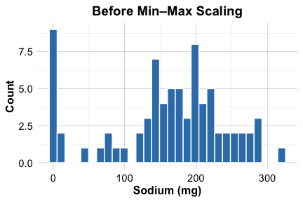

13 Clustering for Insight: Segmenting Data Without Labels
Imagine walking into a grocery store and seeing shelves lined with cereal boxes. Without reading a single label, you might instinctively group them by shape, size, or color. Clustering algorithms aim to replicate this kind of human intuition—grouping similar items based on shared characteristics, even when no categories are given.
How do apps know your habits when you never told them? From fitness trackers that sort users into behavioral types to streaming platforms that recommend shows tailored to your taste, machines often uncover structure in data without relying on labels. This process (known as clustering) enables systems to learn from raw, unlabeled information.
Clustering is a form of unsupervised learning that groups similar data points based on measurable traits, rather than predefined categories. It powers real-world applications such as customer segmentation, gene family discovery, and content recommendation. By organizing complex information into meaningful groups, clustering helps machines detect patterns and uncover structure hidden in the data.
Unlike classification, which predicts known labels (e.g., spam vs. not spam), clustering is exploratory. It reveals hidden structures (patterns that may not be immediately visible but are statistically meaningful). As such, clustering is a key part of the data scientist’s toolkit when the objective is discovery rather than prediction.
Clustering is widely used across domains, including customer segmentation for identifying distinct user groups for personalized marketing, market research for understanding consumer behavior to improve product recommendations, document organization for automatically grouping large text collections by topic or theme, and bioinformatics for uncovering functional relationships between genes through expression pattern similarity.
What This Chapter Covers
In this chapter, we introduce our first unsupervised learning technique (clustering) and continue progressing through the Data Science Workflow introduced in Chapter 2. So far, our focus has been on supervised learning, applying models for classification and regression tasks, including neural networks (Chapter 12), tree-based methods (Chapter 11), and regression analysis (Chapter 10).
Clustering now opens the door to data exploration when no labels are available, shifting our mindset from prediction to pattern discovery.
This chapter introduces the foundations of clustering, including:
The core idea of clustering and how it differs from classification,
How similarity is defined and measured in clustering algorithms,
K-means clustering, one of the most intuitive and widely used methods,
A hands-on case study: segmenting cereals based on their nutritional profiles.
By the end of the chapter, you will be able to apply clustering techniques to real-world datasets, evaluate cluster quality, and uncover meaningful patterns from unlabeled data.
13.1 What is Cluster Analysis?
Clustering is an unsupervised learning technique that organizes data into clusters of similar observations. Unlike supervised learning, which relies on labeled data, clustering is exploratory in nature, aiming to uncover hidden patterns or latent structure in raw data. A good clustering groups data points so that members of the same cluster are highly similar to one another, while those in different clusters are clearly distinct.
To better understand what makes clustering unique, it helps to compare it with classification, as introduced in Chapters 7 and 9. Classification assigns new observations to known categories based on past examples (like identifying an email as spam or not spam). Clustering, by contrast, discovers groupings from unlabeled data. It generates labels rather than predicting existing ones, which is why it is sometimes loosely referred to as unsupervised classification, even though no labels are provided during training. These cluster labels can also be used downstream (for example, as input features for neural networks or tree-based models).
The core objective of clustering is to ensure high intra-cluster similarity (points in the same cluster are alike) and low inter-cluster similarity (clusters are distinct). This idea is illustrated in Figure 13.1, where tight, well-separated groups represent an effective clustering.
Beyond helping us explore structure in data, clustering also plays a practical role in broader machine learning workflows. It is often used as a powerful preprocessing tool, summarizing a dataset into a smaller number of representative groups. This can:
Reduce computation time for downstream models,
Improve interpretability by simplifying complex data structures, and
Enhance predictive performance by transforming raw inputs into structured features.
Before clustering can be applied effectively, the data often need to be preprocessed. Features measured on different scales can distort similarity measures, and categorical variables must be encoded numerically. These steps (such as scaling and one-hot encoding) not only improve algorithm performance but also ensure that the resulting clusters reflect meaningful structure.
What makes two observations feel similar (and how do machines measure that)? Let us break it down in the next section.
How Do Clustering Algorithms Measure Similarity?
At the heart of clustering lies a fundamental question: How similar are these data points? Clustering algorithms answer this using similarity measures (quantitative tools for assessing how close or far apart two observations are). Choosing the right measure is essential for discovering meaningful clusters.
For numerical data, one of the most commonly used similarity measures is Euclidean distance (the straight-line distance between two points in space). You may recall this from the k-Nearest Neighbors algorithm (Section 7.4), where it helped identify the “nearest” neighbors. In clustering, it plays a similar role in grouping nearby observations together.
The Euclidean distance between two data points \(x = (x_1, x_2, \ldots, x_n)\) and \(y = (y_1, y_2, \ldots, y_n)\) with \(n\) features is calculated as:
\[ \text{dist}(x, y) = \sqrt{ \sum_{i=1}^n (x_i - y_i)^2} \]

In Figure 13.2, the line connecting Point A (2, 3) and Point B (6, 7) represents their Euclidean distance: \[ \text{dist}(A, B) = \sqrt{(6 - 2)^2 + (7 - 3)^2} = \sqrt{32} \approx 5.66. \]
While this is easy to visualize in two dimensions, clustering usually takes place in much higher dimensions, across dozens or even hundreds of features.
Before we can meaningfully apply distance-based clustering, we must prepare the data:
Feature scaling (e.g., min-max scaling) ensures that no variable dominates the calculation simply because of its unit or range.
Categorical variables must be numerically encoded (e.g., with one-hot encoding) to be included in distance computations.
Without these steps, even a good algorithm may find spurious patterns or miss real ones. Getting similarity right is the foundation of meaningful clustering.
Other similarity measures (such as Manhattan distance or cosine similarity) are also used in specific contexts, but Euclidean distance remains the default for many clustering tasks.
13.2 K-means Clustering
How does an algorithm decide which points belong together? K-means clustering answers this by iteratively grouping observations into \(k\) clusters, where each group contains data points that are similar to one another. The algorithm updates the cluster assignments and centers until the structure stabilizes, resulting in a set of well-separated clusters.
The K-means algorithm requires the user to specify the number of clusters, \(k\), in advance. It proceeds through the following steps:
Initialize: Randomly select \(k\) data points as initial cluster centers.
Assign: Assign each data point to the nearest center based on distance.
Update: Recalculate each cluster’s centroid (mean of its assigned points).
Repeat: Iterate steps 2 and 3 until no data points change clusters.
Although K-means is simple and efficient, it has limitations. The final clusters depend heavily on the initial choice of cluster centers, meaning different runs of the algorithm may produce different results. In addition, K-means assumes that clusters are spherical and of similar size, which may not always hold in real-world datasets. It is also sensitive to outliers, which can distort centroids and assignments.
To illustrate how K-means works, consider a dataset with 50 records and two features, \(x_1\) and \(x_2\), as shown in Figure 13.3. The task is to partition the data into three clusters.
In the first step, three data points are randomly selected as initial cluster centers (red stars), shown in the left panel of Figure 13.4. Each data point is then assigned to the nearest cluster, forming three groups labeled in blue (Cluster A), green (Cluster B), and orange (Cluster C). The right panel of the figure shows these initial assignments. The dashed lines depict the Voronoi diagram, which partitions the space into regions closest to each center.

Because K-means is sensitive to initialization, poor placement of the initial cluster centers can lead to suboptimal results. To address this, the K-means++ algorithm (Arthur and Vassilvitskii 2006) was introduced in 2007. It selects starting points in a more informed way, improving convergence and reducing variability across different initializations.
After the initial assignment, the algorithm enters the update phase. It recalculates the centroid of each cluster (that is, the mean position of all points in the group). The original cluster centers are updated by moving them to these new centroids, as shown in the left panel of Figure 13.5. The right panel shows how the Voronoi boundaries shift, causing some points to be reassigned.
This process of reassigning points and updating centroids continues iteratively. After another update, some points switch clusters again, leading to a refined partition of the space, as seen in Figure 13.6.
The algorithm continues until no more data points switch clusters. At this point, it has converged, and the final clusters are established, as shown in Figure 13.7.

Once clustering is complete, the results can be summarized in two ways:
Cluster assignments: Each data point is labeled as belonging to Cluster A, B, or C.
Centroid coordinates: The final positions of the cluster centers can be used as representative points.
These centroids are particularly useful in applications such as customer segmentation, image compression, and document clustering, where the goal is to reduce complexity while preserving meaningful structure.
This simple example illustrates the core mechanics of K-means. But choosing how many clusters to use (our next topic) is just as critical to achieving meaningful results.
13.3 Selecting the Optimal Number of Clusters
A central challenge in applying K-means clustering is determining the appropriate number of clusters, \(k\). This choice directly affects the outcome: too few clusters may obscure important structure, while too many may overfit the data and lead to fragmentation. Unlike supervised learning (where performance metrics such as accuracy or AUC guide model selection), clustering lacks an external ground truth, making the selection of \(k\) inherently more subjective.
In practice, domain knowledge can offer initial guidance. For instance, when clustering films, the number of well-established genres might suggest a reasonable starting point. In marketing, teams may set \(k = 3\) if they aim to develop three targeted strategies. Similarly, logistical constraints (such as seating capacity at a conference) may dictate the desired number of groups. However, in many cases, no natural grouping is evident, and data-driven approaches are needed to inform the decision.
A widely used heuristic is the elbow method, which examines how within-cluster variation evolves as \(k\) increases. As additional clusters are introduced, the average similarity within clusters improves, up to a point. Beyond that, the marginal gain becomes negligible. The objective is to identify this point of diminishing returns, known as the elbow.
This concept is illustrated in Figure 13.8, where the total within-cluster sum of squares (WCSS) is plotted against the number of clusters. The “elbow point” (a bend in the curve) suggests a reasonable choice for \(k\) that balances simplicity with explanatory power.

While the elbow method is accessible and visually intuitive, it is not without limitations. Some datasets yield no clear inflection point, and evaluating many values of \(k\) can become computationally demanding in large-scale applications.
Alternative approaches can supplement or refine this decision:
Silhouette Score: Quantifies how well each data point fits within its assigned cluster compared to others. Higher values indicate more coherent clusters.
Gap Statistic: Compares the clustering result to that expected under a null reference distribution, helping assess whether structure exists at all.
Performance in downstream tasks: When clustering is used as a preprocessing step, such as for customer segmentation, different values of \(k\) can be evaluated based on their impact on a subsequent predictive model.
Ultimately, the goal is not necessarily to find a mathematically optimal \(k\), but to identify a clustering solution that is both interpretable and practically useful. Clustering is frequently employed in exploratory analysis, and observing how results change across values of \(k\) can itself be informative. Stable groupings that persist suggest meaningful structure; volatile groupings may reflect ambiguity in the data.
In the next section, we apply these ideas in practice using a real-world dataset. We explore how domain knowledge, visualization, and iterative experimentation can jointly inform the choice of \(k\) in applied settings.
13.4 Case Study: Segmenting Cereal Brands by Nutrition
Why do some cereals end up on the “healthy” shelf while others are marketed to kids? Behind such decisions lies data-driven product segmentation. In this case study, we use K-means clustering to uncover meaningful groupings based on nutritional content. Using the cereal dataset from the liver package, we cluster 77 cereal brands using variables such as calories, fat, protein, and sugar. While simplified, this example demonstrates how unsupervised learning techniques can support product design, marketing strategy, and consumer targeting.
This case study provides a focused, real-world example of how clustering works in practice, giving you hands-on experience applying K-means in R.
13.4.1 Overview of the Dataset
What do breakfast cereals reveal about nutritional marketing and consumer preferences? The cereal dataset offers a compact but information-rich glimpse into the world of packaged food products. It includes 77 breakfast cereals from major brands, described by 16 variables capturing nutritional content, product characteristics, and shelf placement. The dataset is included in the liver package and can be loaded with:
To view the structure of the dataset:
str(cereal)
'data.frame': 77 obs. of 16 variables:
$ name : Factor w/ 77 levels "100% Bran","100% Natural Bran",..: 1 2 3 4 5 6 7 8 9 10 ...
$ manuf : Factor w/ 7 levels "A","G","K","N",..: 4 6 3 3 7 2 3 2 7 5 ...
$ type : Factor w/ 2 levels "cold","hot": 1 1 1 1 1 1 1 1 1 1 ...
$ calories: int 70 120 70 50 110 110 110 130 90 90 ...
$ protein : int 4 3 4 4 2 2 2 3 2 3 ...
$ fat : int 1 5 1 0 2 2 0 2 1 0 ...
$ sodium : int 130 15 260 140 200 180 125 210 200 210 ...
$ fiber : num 10 2 9 14 1 1.5 1 2 4 5 ...
$ carbo : num 5 8 7 8 14 10.5 11 18 15 13 ...
$ sugars : int 6 8 5 0 8 10 14 8 6 5 ...
$ potass : int 280 135 320 330 -1 70 30 100 125 190 ...
$ vitamins: int 25 0 25 25 25 25 25 25 25 25 ...
$ shelf : int 3 3 3 3 3 1 2 3 1 3 ...
$ weight : num 1 1 1 1 1 1 1 1.33 1 1 ...
$ cups : num 0.33 1 0.33 0.5 0.75 0.75 1 0.75 0.67 0.67 ...
$ rating : num 68.4 34 59.4 93.7 34.4 ...Here is an overview of the key variables:
-
name: Name of the cereal (categorical-nominal). -
manuf: Manufacturer of cereal (categorical-nominal), coded into seven categories: “A” for American Home Food Products, “G” for General Mills, “K” for Kelloggs, “N” for Nabisco, “P” for Post, “Q” for Quaker Oats, and “R” for Ralston Purina. -
type: Cereal type, hot or cold (categorical-binary). -
calories: Calories per serving (numerical). -
protein: Grams of protein per serving (numerical). -
fat: Grams of fat per serving (numerical). -
sodium: Milligrams of sodium per serving (numerical). -
fiber: Grams of dietary fiber per serving (numerical). -
carbo: Grams of carbohydrates per serving (numerical). -
sugars: Grams of sugar per serving (numerical). -
potass: Milligrams of potassium per serving (numerical). -
vitamins: Percentage of recommended daily vitamins (categorical-ordinal: 0, 25, or 100). -
shelf: Display shelf position in stores (categorical-ordinal: 1, 2, or 3). -
weight: Weight of one serving in ounces (numerical). -
cups: Number of cups per serving (numerical). -
rating: Cereal rating score (numerical).
The dataset combines several feature types that reflect how real-world data is structured. It includes one binary variable (type), two nominal variables (name and manuf), and two ordinal variables (vitamins and shelf). The remaining variables are continuous numerical measures. Understanding these distinctions is essential for properly preparing the data for clustering.
Before clustering, we need to prepare the data by addressing missing values, selecting relevant features, and applying scaling (steps that ensure the algorithm focuses on meaningful nutritional differences rather than artifacts of data format).
13.4.2 Data Preprocessing
What makes some cereals more alike than others? Before we can explore that question with clustering, we must ensure that the data reflects meaningful similarities. This step corresponds to the second stage of the Data Science Workflow (Figure 2.3): Data Preparation (Section 3). Effective clustering depends on distance calculations, which in turn rely on clean and consistently scaled inputs. Data preprocessing is therefore essential (especially when working with real-world datasets that often contain inconsistencies or hidden assumptions).
A summary of the cereal dataset reveals anomalous values in the sugars, carbo, and potass variables, where some entries are set to -1:
summary(cereal)
name manuf type calories protein fat sodium
100% Bran : 1 A: 1 cold:74 Min. : 50.0 Min. :1.000 Min. :0.000 Min. : 0.0
100% Natural Bran : 1 G:22 hot : 3 1st Qu.:100.0 1st Qu.:2.000 1st Qu.:0.000 1st Qu.:130.0
All-Bran : 1 K:23 Median :110.0 Median :3.000 Median :1.000 Median :180.0
All-Bran with Extra Fiber: 1 N: 6 Mean :106.9 Mean :2.545 Mean :1.013 Mean :159.7
Almond Delight : 1 P: 9 3rd Qu.:110.0 3rd Qu.:3.000 3rd Qu.:2.000 3rd Qu.:210.0
Apple Cinnamon Cheerios : 1 Q: 8 Max. :160.0 Max. :6.000 Max. :5.000 Max. :320.0
(Other) :71 R: 8
fiber carbo sugars potass vitamins shelf weight
Min. : 0.000 Min. :-1.0 Min. :-1.000 Min. : -1.00 Min. : 0.00 Min. :1.000 Min. :0.50
1st Qu.: 1.000 1st Qu.:12.0 1st Qu.: 3.000 1st Qu.: 40.00 1st Qu.: 25.00 1st Qu.:1.000 1st Qu.:1.00
Median : 2.000 Median :14.0 Median : 7.000 Median : 90.00 Median : 25.00 Median :2.000 Median :1.00
Mean : 2.152 Mean :14.6 Mean : 6.922 Mean : 96.08 Mean : 28.25 Mean :2.208 Mean :1.03
3rd Qu.: 3.000 3rd Qu.:17.0 3rd Qu.:11.000 3rd Qu.:120.00 3rd Qu.: 25.00 3rd Qu.:3.000 3rd Qu.:1.00
Max. :14.000 Max. :23.0 Max. :15.000 Max. :330.00 Max. :100.00 Max. :3.000 Max. :1.50
cups rating
Min. :0.250 Min. :18.04
1st Qu.:0.670 1st Qu.:33.17
Median :0.750 Median :40.40
Mean :0.821 Mean :42.67
3rd Qu.:1.000 3rd Qu.:50.83
Max. :1.500 Max. :93.70
As discussed in Section 3.8, it is common for datasets to use codes like -1 or 999 to represent missing or unknown values (especially for attributes that should be non-negative). Since negative values are not valid for nutritional measurements, we treat these entries as missing:
cereal[cereal == -1] <- NA
find.na(cereal)
row col
[1,] 58 9
[2,] 58 10
[3,] 5 11
[4,] 21 11The find.na() function from the liver package reports the locations of missing values. This dataset contains 4 such entries, with the first one appearing in row 58 and column 9.
To handle missing values in the cereal dataset, we apply predictive imputation using random forests, a method introduced in Section 3.8. This approach leverages the relationships among observed variables to estimate missing entries. We use the mice() function from the mice package that creates a predictive model for each variable with missing values, using the other variables as predictors. In this example, we use the "rf" method to perform random forest imputation and we generate a single imputed dataset using one iteration and a small number of trees for demonstration purposes:
library(mice)
imp <- mice(cereal, method = "rf", ntree = 3, m = 1, maxit = 1)
iter imp variable
1 1 carbo sugars potass
cereal <- complete(imp)
find.na(cereal)
[1] " No missing values (NA) in the dataset."The complete() function extracts the imputed dataset from the mice object. By default, it returns the first completed version when only one is created. The mice() function also supports a range of other imputation methods, including mean imputation ("mean"), predictive mean matching ("pmm"), and classification and regression trees ("cart"), allowing users to tailor the imputation strategy to their data and modeling needs.
The resulting cereal dataset contains no missing values, as confirmed by the find.na() function. This imputation step ensures that subsequent clustering analyses are not biased by incomplete records.
After imputation, no missing values remain, and the dataset is complete and ready for clustering. We now select the variables that will be used to group cereals. Three variables are excluded based on their role and structure:
nameis an identifier, functioning like an ID. It carries no analytical value for clustering.manufis a nominal variable with seven categories. Encoding it would require six dummy variables, which may inflate dimensionality and distort distance metrics.ratingreflects a subjective outcome (e.g., taste), rather than a feature of the cereal’s composition. It is more appropriate as a target variable in supervised learning than as an input for clustering.
Because the numerical features span different scales (e.g., milligrams of sodium vs. grams of fiber), we apply min-max scaling using the minmax() function from the liver package:
cereal_mm <- minmax(cereal_subset, col = "all")
str(cereal_mm)
'data.frame': 77 obs. of 13 variables:
$ type : num 0 0 0 0 0 0 0 0 0 0 ...
$ calories: num 0.182 0.636 0.182 0 0.545 ...
$ protein : num 0.6 0.4 0.6 0.6 0.2 0.2 0.2 0.4 0.2 0.4 ...
$ fat : num 0.2 1 0.2 0 0.4 0.4 0 0.4 0.2 0 ...
$ sodium : num 0.4062 0.0469 0.8125 0.4375 0.625 ...
$ fiber : num 0.7143 0.1429 0.6429 1 0.0714 ...
$ carbo : num 0 0.167 0.111 0.167 0.5 ...
$ sugars : num 0.4 0.533 0.333 0 0.533 ...
$ potass : num 0.841 0.381 0.968 1 0.238 ...
$ vitamins: num 0.25 0 0.25 0.25 0.25 0.25 0.25 0.25 0.25 0.25 ...
$ shelf : num 1 1 1 1 1 0 0.5 1 0 1 ...
$ weight : num 0.5 0.5 0.5 0.5 0.5 0.5 0.5 0.83 0.5 0.5 ...
$ cups : num 0.064 0.6 0.064 0.2 0.4 0.4 0.6 0.4 0.336 0.336 ...To visualize the effect of min-max scaling, we compare the distribution of the sodium variable before and after scaling:
ggplot(cereal, aes(x = sodium)) +
geom_histogram(color = "white", fill = "#2C7BB6") +
labs(x = "Sodium (mg)", y = "Count", title = "Before Min–Max Scaling")
ggplot(cereal_mm, aes(x = sodium)) +
geom_histogram(color = "white", fill = "#2C7BB6") +
labs(x = "Scaled Sodium [0–1]", y = "Count", title = "After Min–Max Scaling")
As shown in the histograms, the sodium feature is rescaled to the \([0, 1]\) range. This prevents variables like sodium or potassium (originally measured in large units) from overpowering the clustering process.
With the dataset cleaned, imputed, and normalized, we are now ready to explore how cereals naturally group together. But first, how many clusters should we use?
13.4.3 Selecting the Number of Clusters
A key decision in clustering is selecting how many clusters (\(k\)) to use. Choosing too few clusters can obscure meaningful groupings, while too many may lead to overfitting or fragmented results. Because clustering is unsupervised, this decision must be guided by internal evaluation methods.
One widely used approach is the elbow method, which evaluates how the total within-cluster sum of squares (WCSS) decreases as \(k\) increases. Initially, adding more clusters significantly reduces WCSS, but beyond a certain point the improvement slows. The “elbow” in the plot (where the rate of decrease flattens) suggests a suitable value for \(k\).
To create the elbow plot, we use the fviz_nbclust() function from the factoextra package. This package provides user-friendly tools for visualizing clustering results and evaluation metrics. The fviz_nbclust() function generates evaluation plots for different values of \(k\) based on methods such as WCSS or silhouette width.
library(factoextra)
fviz_nbclust(cereal_mm, kmeans, method = "wss", k.max = 15) +
geom_vline(xintercept = 4, linetype = 2, color = "gray")
As shown in Figure 13.8, the WCSS drops sharply for small values of \(k\), but levels off after \(k = 4\). This suggests that four clusters may offer a reasonable balance between model complexity and within-cluster cohesion.
13.4.4 Performing K-means Clustering
With the number of clusters selected, we now apply the K-means algorithm to segment the cereals into four groups. We use the kmeans() function from base R, which does not require any additional packages. Its key arguments include the input data (x), the number of clusters (centers), and optional parameters such as the number of random starts (nstart), which helps avoid poor local optima.
We use set.seed() to ensure that the results are reproducible. Since the K-means algorithm involves random initialization of cluster centers, setting the seed guarantees that the same clusters are obtained each time the code is run.
The kmeans() function returns several useful components, including:
-
cluster: the cluster assignment for each observation, -
centers: the coordinates of the cluster centroids, -
size: the number of observations in each cluster, -
tot.withinss: the total within-cluster sum of squares (used earlier in the elbow method).
To check how the observations are distributed across the clusters:
cereal_kmeans$size
[1] 36 10 13 18The output shows the number of cereals assigned to each cluster, which can help us understand the distribution of products across the four groups.
Visualizing the Clusters
To gain insight into the clustering results, we use the fviz_cluster() function from the factoextra package to visualize the four groups:
fviz_cluster(cereal_kmeans, cereal_mm,
geom = "point",
ellipse.type = "norm",
palette = "custom_palette",
ggtheme = theme_minimal())The resulting scatter plot displays the cluster structure, with each point representing a cereal. Colors indicate cluster membership, and ellipses represent the standard deviation around each cluster center. The plot is constructed using principal component analysis (PCA), which reduces the high-dimensional feature space to two principal components for visualization. Although some detail is inevitably lost, this projection helps reveal the overall shape and separation of the clusters.
Interpreting the Results
The clustering results reveal natural groupings among cereals based on their nutritional composition. For example:
One cluster includes low-sugar, high-fiber cereals that are likely positioned for health-conscious consumers.
Another contains high-calorie, high-sugar cereals typically marketed to children.
A third represents balanced options with moderate levels of key nutrients.
The fourth cluster combines cereals with higher protein or other distinctive profiles.
To examine which cereals belong to a particular cluster (e.g., Cluster 1), we can use:
cereal$name[cereal_kmeans$cluster == 1]This command returns the names of cereals assigned to Cluster 1, allowing for further inspection and interpretation of that group’s defining features.
13.4.5 Reflections and Takeaways
The cereal clustering analysis illustrates how K-means can be used to segment products based on measurable features (in this case, nutritional content). By combining careful preprocessing, feature scaling, and model evaluation, we identified coherent groupings that reflect distinct product profiles.
More generally, this example highlights the value of unsupervised learning in discovering hidden patterns when no outcome variable is available. Clustering is widely used in domains such as marketing, health analytics, and customer segmentation, where understanding natural structure in the data leads to better decisions and targeted strategies.
The process illustrated here (choosing relevant features, selecting the number of clusters, and interpreting results) forms the foundation for applying clustering techniques to other domains. Whether used for segmenting users, detecting anomalies, or grouping documents, clustering provides a flexible tool for uncovering structure and generating insights.
13.5 Chapter Summary and Takeaways
In this chapter, we introduced clustering as a fundamental technique for unsupervised learning (where the goal is to group observations based on similarity without using labeled outcomes).
We focused on the K-means algorithm, one of the most widely used clustering methods. You learned how K-means iteratively partitions data into \(k\) clusters by minimizing the within-cluster sum of squares. Selecting an appropriate number of clusters is crucial, and we explored common evaluation methods such as the elbow method.
We emphasized the importance of proper data preparation, including selecting relevant features, handling missing values, and applying scaling techniques to ensure fair distance calculations.
Through a case study using the cereal dataset, we demonstrated how to apply K-means in R, visualize the resulting clusters, and interpret their meaning in a real-world context. Unlike earlier chapters, we did not partition the dataset into training and testing sets. Since clustering is an unsupervised technique, there is no outcome variable to predict, and evaluation relies on internal measures such as within-cluster variance or silhouette scores.
This practical application highlighted the value of clustering in uncovering patterns and informing decisions. Clustering is a versatile tool with wide applications (from customer segmentation to product classification and beyond). A solid understanding of its strengths and limitations is essential for every data scientist.
13.6 Exercises
The exercises are grouped into two categories: conceptual questions and practical exercises using the redWines dataset, applying clustering techniques to real-world data.
Conceptual Questions
What is clustering, and how does it differ from classification?
Explain the concept of similarity measures in clustering. What is the most commonly used distance metric for numerical data?
Why is clustering considered an unsupervised learning method?
What are some real-world applications of clustering? Name at least three.
Define the terms intra-cluster similarity and inter-cluster separation. Why are these important in clustering?
How does K-means clustering determine which data points belong to a cluster?
Explain the role of centroids in K-means clustering.
What happens if the number of clusters \(k\) in K-means is chosen too small? What if it is too large?
What is the elbow method, and how does it help determine the optimal number of clusters?
Why is K-means sensitive to the initial selection of cluster centers? How does K-means++ address this issue?
Describe a scenario where Euclidean distance might not be an appropriate similarity measure for clustering.
Why do we need to normalize or scale variables before applying K-means clustering?
How does clustering help in dimensionality reduction and preprocessing for supervised learning?
What are the key assumptions of K-means clustering?
How does the silhouette score help evaluate the quality of clustering?
Compare K-means with hierarchical clustering. What are the advantages and disadvantages of each?
Why is K-means not suitable for non-spherical clusters?
What is the difference between hard clustering (e.g., K-means) and soft clustering (e.g., Gaussian Mixture Models)?
What are outliers, and how do they affect K-means clustering?
What are alternative clustering methods that are more robust to outliers than K-means?
Hands-On Practice: k-mean with the redWines Dataset
These exercises use the redWines dataset from the liver package, which contains chemical properties of red wines and their quality scores. Your goal is to apply clustering techniques to uncover natural groupings in the wines, without using the quality label during clustering.
Data Preparation and Exploratory Analysis
- Load the redWines dataset from the liver package and inspect its structure.
Summarize the dataset using
summary(). Identify any missing values.Check the distribution of wine quality scores in the dataset. What is the most common wine quality score?
Since clustering requires numerical features, remove any non-numeric columns from the dataset.
Apply min-max scaling to normalize all numerical variables before clustering. Why is this step necessary?
Applying k-means Clustering
- Use the elbow method to determine the optimal number of clusters for the dataset.
library(factoextra)
fviz_nbclust(redWines, kmeans, method = "wss")Based on the elbow plot, choose an appropriate value of \(k\) and perform K-means clustering.
Visualize the clusters using a scatter plot of two numerical features.
Compute the silhouette score to evaluate cluster cohesion and separation.
Identify the centroids of the final clusters and interpret their meaning.
Interpreting the Clusters
Assign the cluster labels to the original dataset and examine the average chemical composition of each cluster.
Compare the wine quality scores across clusters. Do some clusters contain higher-quality wines than others?
Identify which features contribute most to defining the clusters.
Are certain wine types (e.g., high acidity, high alcohol content) concentrated in specific clusters?
Experiment with different values of \(k\) and compare the clustering results. Does increasing or decreasing \(k\) improve the clustering?
Visualize how wine acidity and alcohol content influence cluster formation.
(Optional) The liver package also includes a whiteWines dataset with the same structure as redWines. Repeat the clustering process on this dataset, from preprocessing and elbow method to K-means application and interpretation. How do the cluster profiles differ between red and white wines?
Self-reflection
- Reflect on your experience applying K-means clustering to the redWines dataset. What challenges did you encounter in interpreting the clusters, and how might you validate or refine your results if this were a real-world project? What role do domain insights (e.g., wine chemistry, customer preferences) play in making clustering results actionable?